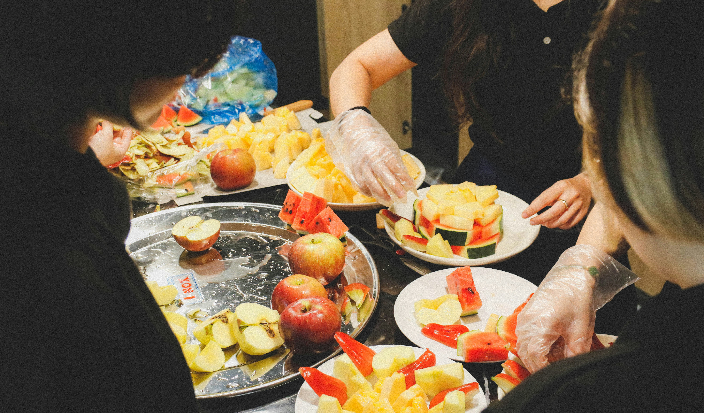

About Healthy Bite
Healthy Bite was founded with a simple mission: to make nutrition easy, accessible, and enjoyable for everyone — especially for busy students and professionals who struggle to find time for healthy eating.
Our Philosophy
We believe that small, consistent choices can make a big difference in your overall health. You don’t need to be a chef to eat well — you just need the right guidance, motivation, and a few quick recipes to keep your body fueled and your mind sharp.
“Healthy eating is not about perfection — it’s about balance, awareness, and self-care.”
Our Goals
- Promote accessible and affordable healthy food ideas
- Encourage sustainable and mindful eating habits
- Support students and professionals with realistic nutrition advice
Our content is designed to help you make smarter food choices, whether you’re studying late, working long hours, or simply trying to build better eating habits. We use data-backed information and easy-to-follow visuals to make nutrition approachable and enjoyable.
Meet Our Team
Healthy Bite is run by a group of nutrition enthusiasts, designers, and content creators who believe in the power of community-based wellness. Our small team collaborates to create informative articles, inspiring visuals, and delicious recipes that can fit into any lifestyle.
